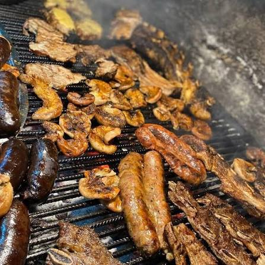
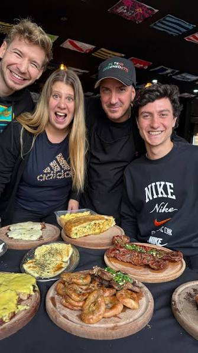
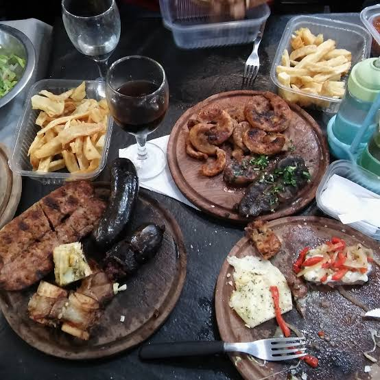

El Fogón de Don Nino
40 años de asado, familia y fuego de leña en el corazón de Sarandí.
Nuestra historia
Tres generaciones al fuego
Hace 40 años, Don Nino prendió por primera vez la parrilla en Casella Piñero al 187, en Sarandí. Empezó con una mesa y un fuego a leña, y con el tiempo el barrio entero terminó pasando por acá para comer un buen asado.
Hoy la parrilla la sigue llevando la familia: Ricardo, su hijo, está al frente del salón y de la cocina igual que aprendió de chico, mirando a su padre. Su hijo Facu se sumó para que el fogón también llegue a quienes buscan dónde comer desde el celular.
Somos de fierro y madera, no de neón. Seguimos haciendo las cosas como siempre: con brasas, tiempo y la mesa siempre lista para la familia y los amigos.

Te esperamos
Reservá tu mesa
Escribinos por WhatsApp o llamanos directamente. También coordinamos reservas para grupos grandes y cumpleaños, y armamos pedidos para take away o delivery propio, todo por el mismo medio.
Encontranos
Ubicación y horarios
📍 Casella Piñero 187, B1872 Sarandí, Provincia de Buenos Aires
🕓 Martes a domingo, de 12:00 a 00:00hs
Lunes cerrado

Seguinos en Instagram
Todos los días subimos los platos del día, así sabés qué hay en la parrilla antes de venir.
@elfogondenino